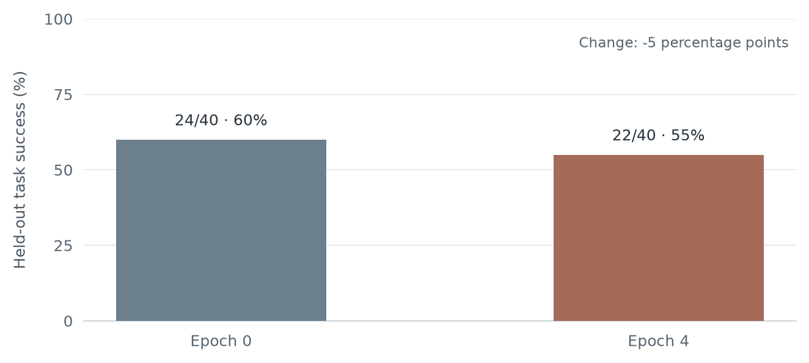

Curation Plasticity · Research note
Can agents learn from failure without learning the wrong lesson?
A small API-agent study asks whether trace-grounded reflection and task curation can make self-improvement more reliable—and whether that reliability transfers to held-out work.
A failed request looks like feedback. But what does it tell the agent? Maybe a required header is missing. Maybe the task is impossible, the environment is flaky, or the evaluator is wrong. If a Reflector treats every failure as a prompt defect, it can turn noise into a permanent rule.
The challenge is not just to help an agent learn from experience. It is to decide which experience is safe to learn from.
What the papers contribute
Agent Plasticity: Measuring Self-Improvement Through Experience
Singh and colleagues argue that agent evaluations should measure how much performance improves on future held-out tasks, how efficiently the agent learns, and where the improvement process breaks. Their framing separates final capability from learning efficiency and asks whether gains transfer beyond the tasks that produced them.
GEPA-Curator: Curated Learning for Self Improving Agents
Yu and colleagues focus on the quality of experiences that reach a prompt optimizer. Their Curator filters tasks likely to provide unreliable signals and can retrieve a prior successful trajectory. The motivation is that a failure may come from the prompt, task, tools, harness, environment, or judge.
This project borrows those questions, but uses a smaller synthetic REST API rather than reproducing either paper’s benchmarks. The aim is to make the failure-to-rule step easy to inspect.
What we are testing
The agent completes API tasks and carries a playbook of learned rules between epochs. The task pool mixes learnable requests with easy controls and planted noise, including impossible requests and unreliable feedback. On a failure, the Reflector receives the failed request, error body, and any successful request observed afterward.
A deterministic validator checks that a proposed rule is tied to those traces: it must name a supported header, parameter, or field; unsupported values need successful-trace evidence; and explicit instructions that forbid fields used by successful requests are rejected. Only grounded rules reach the gate. The gate compares aggregate scores on the training batch, so it can still accept a candidate that regresses one task.
| Arm | Comparison |
|---|---|
| A0 | Grounding check, then batch gate. |
| A0-raw | Same Reflector prompt and gate, without grounding validation. |
| A3 | Curator can defer noisy or well-understood tasks and provide a relevant prior success; grounding and gate remain. |
What the first run says so far
The saved A0 seed-42 checkpoint is at epoch 5 of 8. On the same 40 held-out tasks, success was 24/40 (60%) at epoch 0 and 22/40 (55%) at epoch 4.

Training-batch success varied across epochs: 7/10, 5/10, 5/10, 6/10, and 9/10. The saved epoch-5 playbook contains zero rules. Tracked hypothetical cost is about $0.111; it is a configured reference-cost estimate, not an invoice.
What comes next
Finish the eight-epoch runs and compare A0, A0-raw, and A3 on matched seeds and held-out checkpoints. Report held-out success alongside costs, accepted rules, grounding/gate rejections, regressions, and API retry counts. The useful comparison is whether grounding and curation improve held-out learning after cost—not whether one short run happens to end higher.
To reproduce a short hosted run, start Phoenix locally, set NVIDIA_API_KEY, and run from the repository root:
python run_real_experiment.py --arm A0 --seed 42 --epochs 3 --eval-epochs 0,3 --run-tag demo
Hosted runs make real model calls and may incur provider charges. The offline test suite does not make model calls. Reuse the same run tag to resume; choose a new tag for a separate output folder.
Singh et al., Agent Plasticity · Yu et al., GEPA-Curator · Arize blog post used as a style reference.
Original wording and restrained editorial layout. The chart is generated with Matplotlib from saved run results.